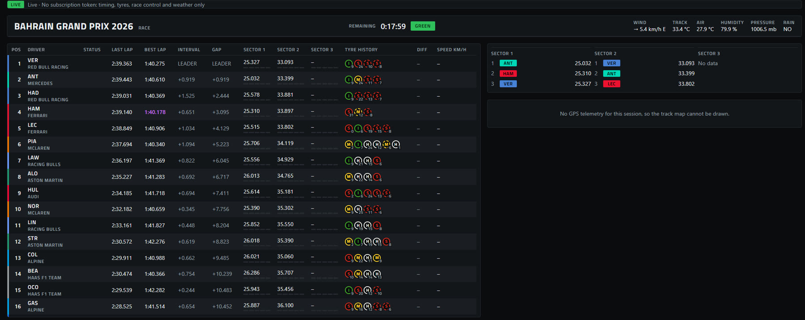
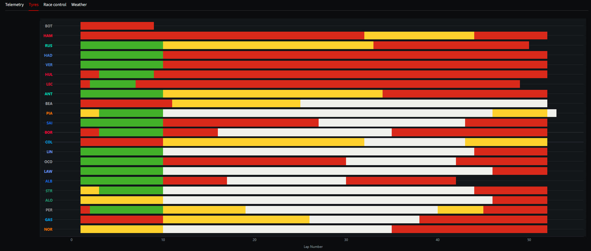
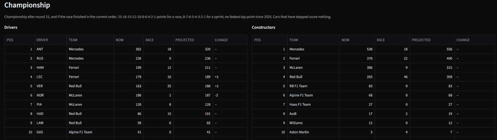
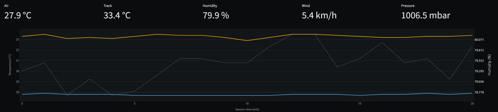
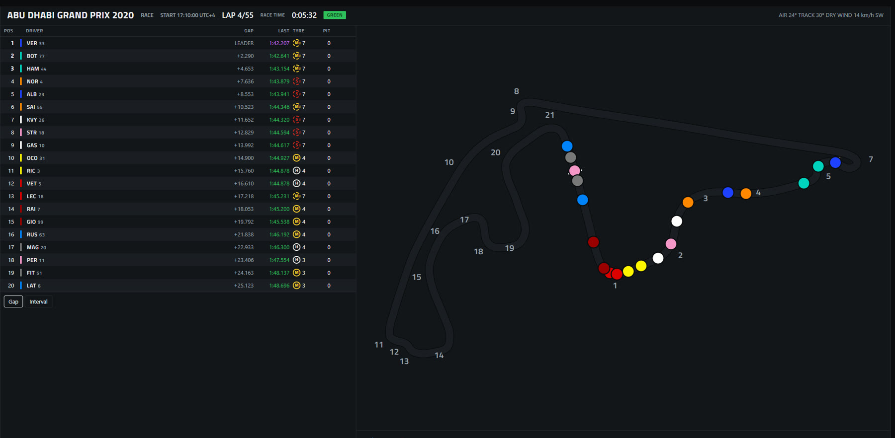
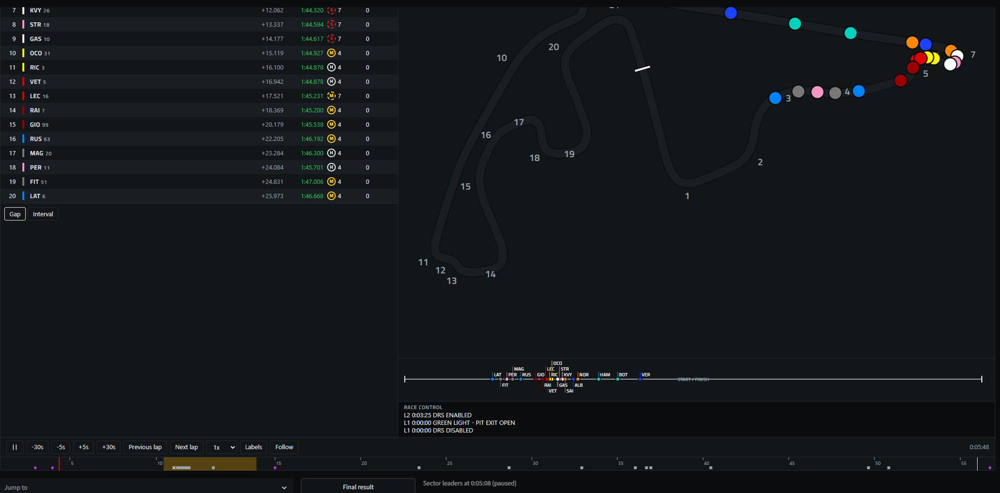
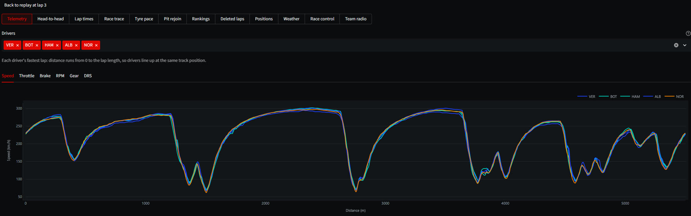
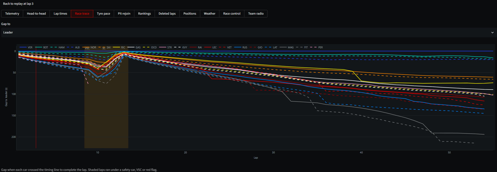

Formula 1 timing, on your own machine.
Follow a session live from F1's own timing feed, replay any race with the timing tower and track map, then take every lap apart in twelve analysis views.
21 seconds of the app with a race on air: live timing, tyres, the championship as it stands, a replay and the analysis views. Every screen is the real app.
A session is running now.
When a session is on air the sidebar offers Go live. The Live page reads F1's own timing feed through the app's SignalR Core client, so the tower updates as the cars cross the line, with no account needed.








- Race control messages and the track status (green, yellow, SC, VSC, red) as they happen.
- Sector leaders: the three fastest in each sector, next to the tower.
- Broadcast delay: hold the live view back to match your TV stream.
- Auto-record: the raw feed is saved, so a live session can be replayed later.
- Reconnects by itself when F1 drops the connection, and shows its state.
- Optional F1TV token adds car telemetry and positions; it is only ever sent to F1.
No session on? Replay any race.
Pick a season, Grand Prix and session and the app rebuilds it from FastF1: the timing tower and track map as they stood at the cursor, with flags, race control and weather. Play it, scrub it, or step lap by lap.




- Timeline with safety cars, flags, pit stops and fastest laps marked; jump straight to any of them.
- Track-position strip: every car on one line, so trains and gaps are easy to read.
- Qualifying aware: Q1/Q2/Q3 segments, knock-outs and the segment clock.
- Save session for replay keeps a session on disk to open offline later.
Then take it apart.
Every loaded session opens in twelve analysis views. Pick the drivers once and the charts follow them; the selection and the view are in the URL, so a link opens exactly what you were looking at.




| View | What it shows |
|---|---|
| Telemetry | Speed, throttle, brake, RPM, gear and DRS for the chosen drivers (DRS hidden for 2026, which replaced it with active aero). |
| Head-to-head | Two drivers stacked: speed, throttle, brake, gear and the time delta, with corner numbers and a lap picker per driver. |
| Lap times | Every lap for the chosen drivers, with pit-out laps marked and neutralised laps shaded. |
| Race trace | Gap to the leader or to a chosen driver, lap by lap. |
| Tyre pace | Fuel-corrected lap time against tyre age per compound, and the loss per lap. |
| Pit rejoin | Where a car would rejoin if it pitted at the end of a given lap. |
| Rankings | Best sector times and speed-trap readings (I1, I2, finish line, speed trap), ranked. |
| Deleted laps | Laps deleted for track limits, the reason, when it was announced, and warnings per driver. |
| Positions | Running order lap by lap. |
| Weather | Air and track temperature, humidity, wind and rain over the session. |
| Race control | Every message, filterable and searchable. |
| Team radio | The session's team radio recordings (2023 onwards), from OpenF1. |
Results, records, your settings.
The pages around the replay, plus the settings that make it yours.
Results
Final classification, sector bests, track dominance, tyre strategy and the championship after the round.
Records
Fastest lap, sector bests and top speed for this session and across every session you have loaded, kept between runs.
Settings
km/h or mph, °C or °F, track or local time, favourite drivers, which tower columns and panels show, and cache controls.
One command.
The installers set up uv if it is missing and install the app as a uv tool. uv downloads a matching Python itself, so you don't need Python installed, and no admin rights are needed.
In PowerShell. This also adds a Start-menu shortcut, "F1 Replay".
irm https://raw.githubusercontent.com/mricero/F1-Telemetry-Dashboard/main/install.ps1 | iexIn a terminal.
curl -LsSf https://raw.githubusercontent.com/mricero/F1-Telemetry-Dashboard/main/install.sh | shOn any OS, once uv is installed. To try it without installing, use the second line.
uv tool install git+https://github.com/mricero/F1-Telemetry-Dashboarduvx --from git+https://github.com/mricero/F1-Telemetry-Dashboard f1dashRun it
| Command | What it does |
|---|---|
f1dash | Opens the dashboard in your browser. |
f1dash --port 8600 | Serves on a specific port (default 8501, or the next free one). |
f1dash --no-browser | Serves without opening a browser window. |
f1dash update | Installs the newest release. |
f1dash paths | Shows where the cache, replays, records and .env live. |
uv tool uninstall f1dash | Removes the app; your data folders stay until you delete them. |
Pick a season, Grand Prix and session in the sidebar and select Load session. The first load downloads the session through FastF1; later loads read the cache. When a session is on air, select Go live.
This is an unofficial project. It reads F1's undocumented live-timing endpoints and FastF1's archive, and it is not associated with the Formula 1 companies. Run it locally, for yourself: F1 has blocked the IP addresses of hosted, heavy users of the feed. Read Data sources & terms first.